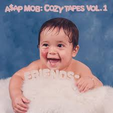

The A$AP is a rap collective that is based out of New York City. The Mob Features a bunch of of solo artists like A$AP Rocky, Ferg, Twelvyy, and Nast. Every year they collaberate to commerate the leader of the A$AP Mob, A$AP Yams who died in 2015. They call these collection of albums "The Cozy Tapes." Both of the currently existing Cozy Tapes feature a multitude of artits.

7/10
I would Give this album a 7/10 for its use of so many features, use of addiotional skit to give the album theme, and it being the first album from this collective.
This Album is the first of the two Cozy Tapes that currently exist and it dropped in October of 2016. This Album Peaked at the #13 place on the billboard 200. The Album featured a multitude of artists such as, Playboy Carti, Lil Yaghty, Tyler the Creator, MadeinTYO, and Lil Uzi Vert to name a few. The cover depicts a baby picture of the original founder of the A$AP Mob, A$AP Yams, as he died in an overdose the year before making this album a comemoraton of his work.
8/10
I would Give this album a 8/10 for its use of so many features, entrancing mood, and catchy beats.
This Album is the Second of the two Cozy Tapes that currently exist and it dropped in September of 2017. This Album Peaked at the #17 place on the billboard 200 of 2017. The Album featured a multitude of artists such as, Playboy Carti, Lil Yaghty, NAV, MadeinTYO, and Lil Uzi Vert to name a few. The cover shows all A$AP Mob Artists like A$AP Rocky, Ferg, Twelvyy, and Ant. Much like the last album, this album is a tribute to A$AP Yams.